Section 01
Performance Trends Over Time
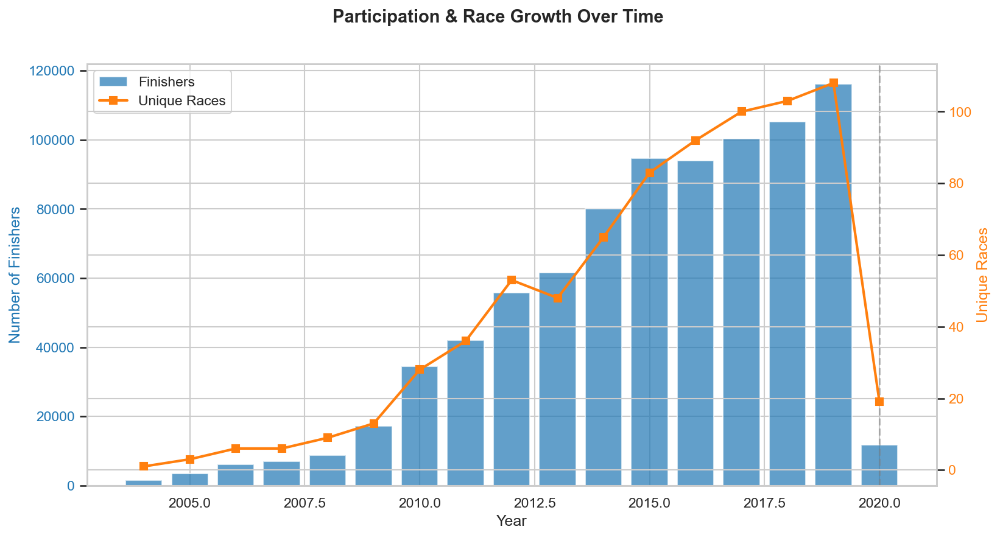
From under 1,000 finishers in the early 2000s, the sport grew to over 116,000 finishers across 60+ races by 2019. Race count and finisher numbers track together closely, suggesting growth has been supply-driven as much as demand-driven — more events created more finishers. The 2020 COVID-19 pandemic caused a near-total collapse, with finisher count falling ~90% to roughly 11,800.
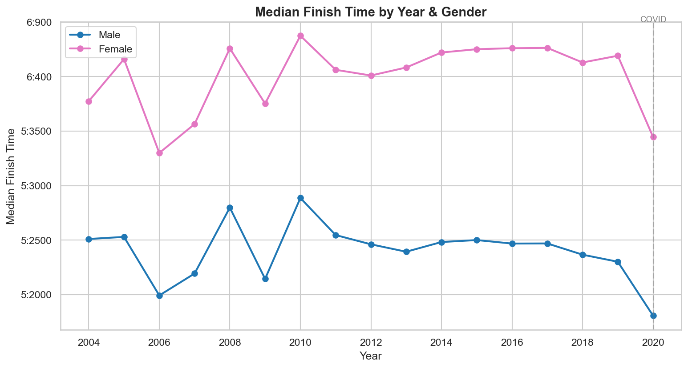
Despite the sport more than doubling in size over this period, the overall median finish time barely moved — hovering around 5h 45m–5h 50m throughout. This stability suggests that as participation grew it attracted athletes across the full spectrum of ability, keeping the median anchored rather than drifting faster or slower.
Why median? Finish times are right-skewed — a small number of very slow finishers pull the mean up, making it unrepresentative of a typical athlete. Median is robust to these outliers and stays consistent with the percentile-band analysis.
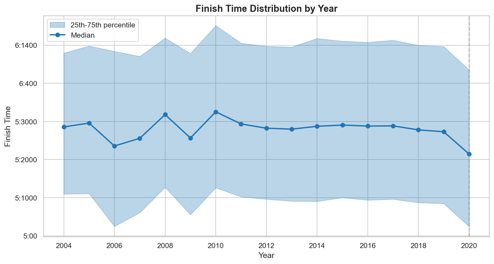
The interquartile range — roughly 1 hour wide — has remained stable across the entire dataset, showing that the spread of the field hasn't changed despite explosive participation growth. Both the fast and the slow ends of the distribution moved in lockstep with the median, suggesting the sport has consistently attracted a similar mix of competitive and participation-focused athletes each year.
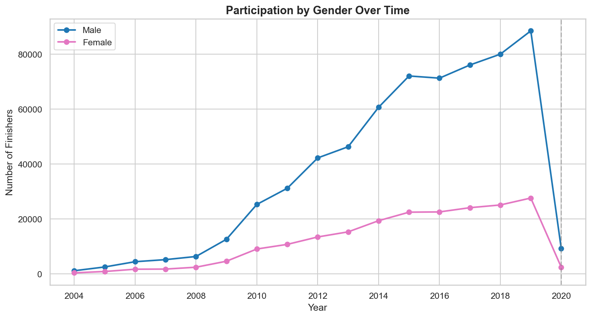
Both genders show virtually flat median times across the full period, reinforcing that the sport's growth drew in athletes of all abilities. The gender gap — around 28–32 minutes — is consistent throughout, pointing to a stable physiological differential rather than any closing or widening trend over time.
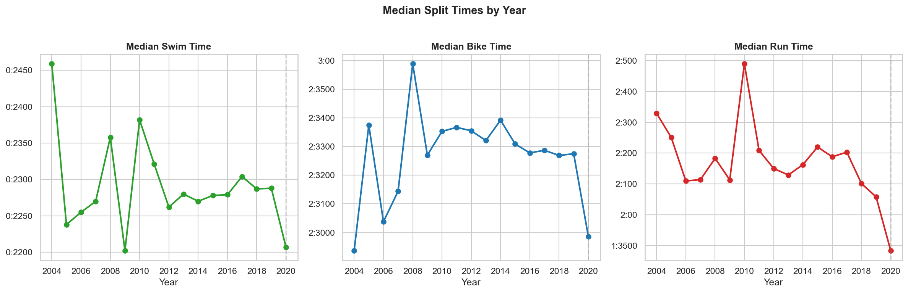
Swim and bike times are remarkably flat across the period. The run shows a marginal upward trend (slower), which may reflect the sport's growth drawing in athletes who are stronger swimmers or cyclists but less running-focused. All three disciplines dip noticeably in 2020, likely because the small number of races held that year attracted a disproportionate share of competitive, experienced athletes.
Section 02
Age Group Analysis
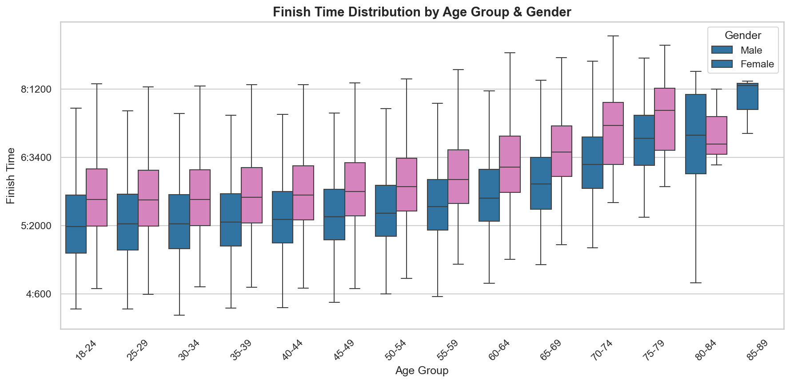
The 25–34 age bands post the tightest distributions and fastest medians for both genders. Performance degrades gradually through the 40s and then more steeply from 55 onwards. Women's medians sit consistently 25–35 minutes above men's across all age groups, but the shape of the curve is nearly identical — age affects both genders in the same way.
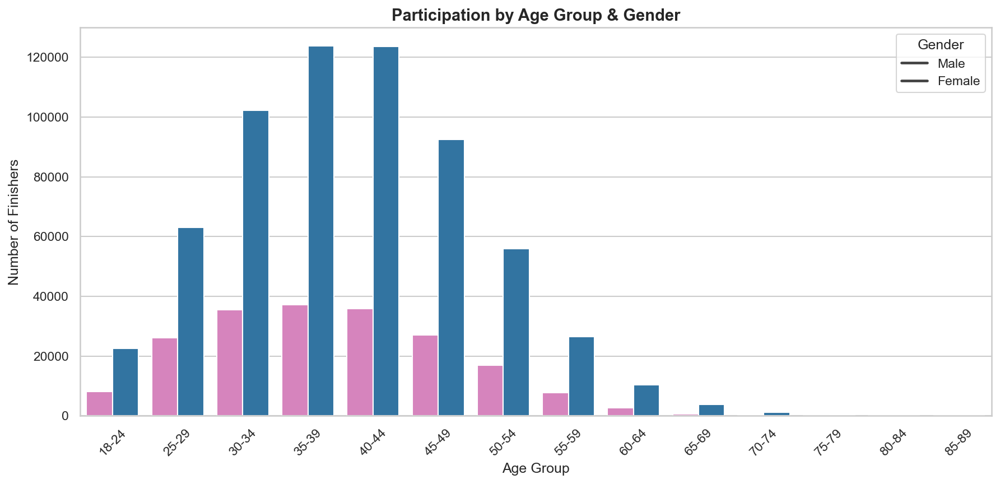
The 35–44 age band accounts for the largest share of finishers — a group with the disposable income and life structure to support training for a long-distance triathlon. Female participation is lower across every age group, with the ratio most balanced in the 25–34 range.
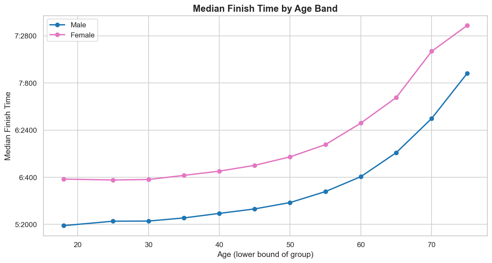
Both men and women peak in the late 20s to early 30s. The decline through the 30s and 40s is notably gentle — athletes in their mid-40s are typically only 15–20 minutes slower than their peak — before performance drops more sharply after 55. This gradual ageing curve is one reason the sport attracts and retains a strong Masters demographic.
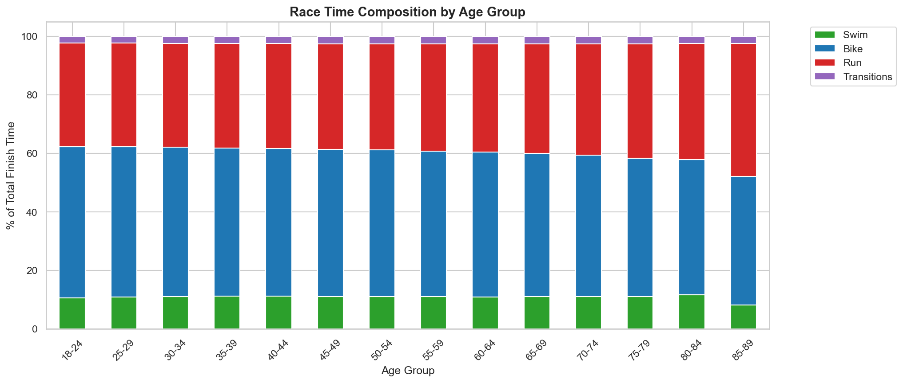
The bike leg consistently accounts for roughly 50% of total finish time across every age group, with swim at ~14% and run at ~25%. The run proportion increases slightly in older groups, suggesting running pace deteriorates faster with age than swimming or cycling. Transitions contribute a small but measurable ~2–3%, a reminder that T1/T2 efficiency is a real differentiator at all ages.
Section 03
Country Comparisons
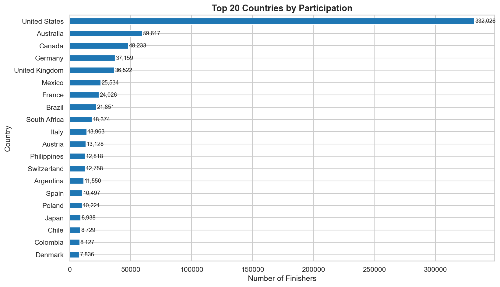
The USA contributes more finishers than the next several countries combined, reflecting both the sport's North American origins and the sheer density of IRONMAN events hosted there. Australia and Germany are distant second and third, followed by a cluster of European nations with strong triathlon cultures. The long tail of countries highlights the sport's increasingly global footprint.
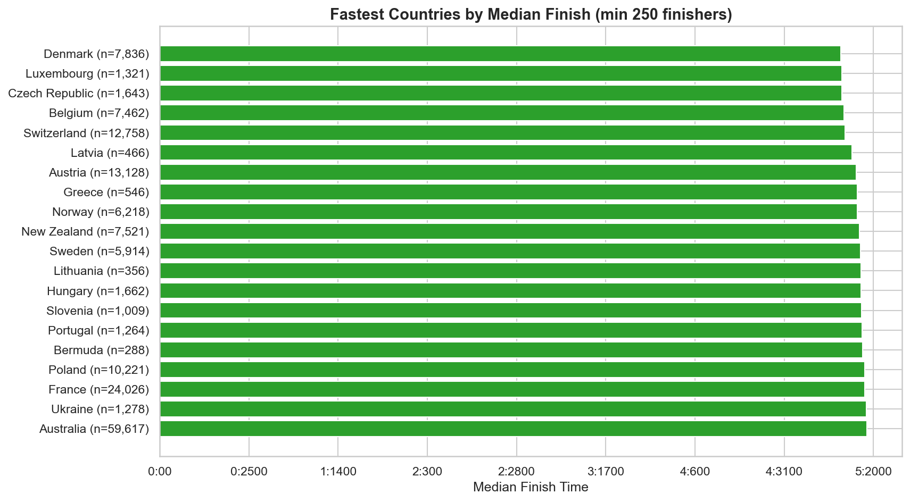
European nations with deep triathlon and cycling cultures — Switzerland, Germany, Belgium — dominate the top of the speed leaderboard. The 250-finisher threshold filters out countries with tiny sample sizes, so these rankings reflect genuine population-level speed rather than a handful of elite athletes. Notably, high-participation countries like the USA sit further down, suggesting volume and speed don't necessarily go hand in hand.
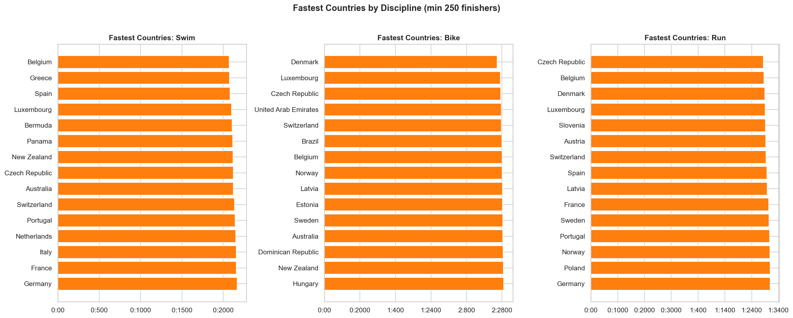
Discipline leadership varies considerably across swim, bike, and run, revealing distinct national strengths. Countries that top the swim rankings don't always appear in the bike or run lists — pointing to different sporting traditions and training cultures. The bike leaderboard most closely mirrors the overall finish time ranking, consistent with the bike leg's ~50% share of total race time.
Section 04
Race & Course Comparisons
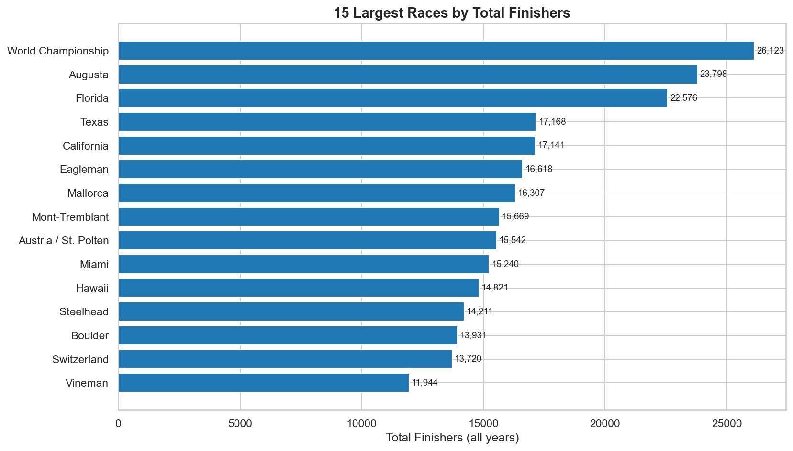
Volume reflects longevity as much as field size — events that have run for many years accumulate finishers across multiple editions. US races dominate the top, consistent with the country's participation numbers. Several World Championship qualifier venues appear here, drawing competitors from across the globe year after year.
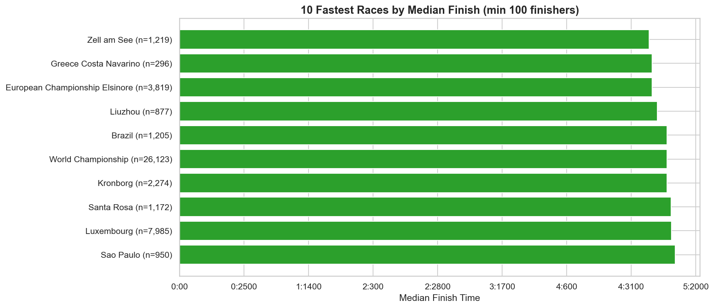
Flat, low-elevation courses in mild climates dominate the fast end of the list. These races are typically prestigious qualifier events that attract more competitive, experienced athletes — which itself pulls the median down. Course selection is therefore one of the most reliable levers an athlete can pull to post a personal best.
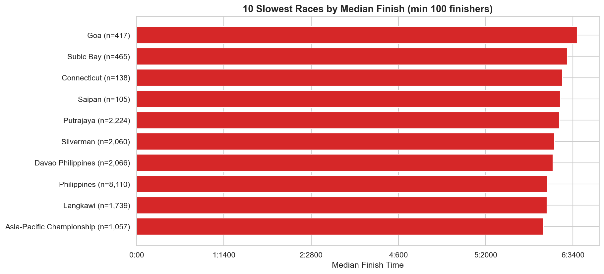
Mountainous terrain and technically demanding courses push medians well above average — some exceed 6h 30m. A few of the slowest races are also newer or smaller events whose fields skew toward first-timers and participation-focused athletes rather than seasoned competitors. Course difficulty and field composition both contribute to slower medians.
Summary
Key Findings
- Median finish time: 5h 47m overall — Male 5h 40m, Female 6h 09m
- Performance is stable across years — median times barely changed 2004–2019
- Peak age group: 18–24 has the fastest median, but performance holds well through 45–49
- US dominates participation with 332K finishers — 5.5× more than #2 Australia
- Female participation has grown steadily, reaching ~25% by 2019
- 2020 COVID impact: only 11.8K finishers vs 116K in 2019
- Bike leg accounts for ~50% of total time — the biggest lever for improving overall finish time
- Course selection matters: the gap between fastest and slowest courses exceeds 1 hour